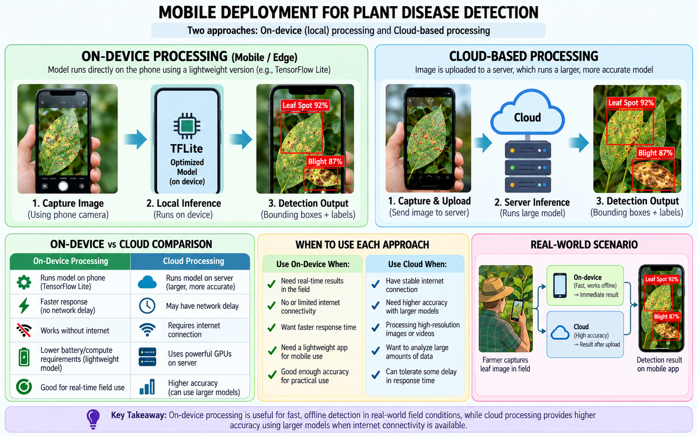

Mobile Deployment
For plant disease detection to be useful in real-world settings, the system should work efficiently on mobile devices. A mobile application may capture an image or video, process it locally on the device, or send the data to a cloud server for analysis.
On-Device Processing
In on-device processing, the computer vision model runs directly on the smartphone. This can provide faster response times and does not require a continuous internet connection.
However, mobile devices have limited memory, processing power, and battery capacity compared with desktop computers or cloud servers.
Cloud-Based Processing
In cloud-based processing, the mobile device captures the image or video and sends it to a remote server. The server can run larger and more computationally expensive models.
Cloud processing can support more complex models, but it depends on network connectivity and may introduce additional delay.
Lightweight Models
Lightweight neural network architectures are designed to reduce computation while maintaining useful accuracy. Models such as MobileNet are commonly used when deep learning must run on devices with limited resources. [2]

Figure: Comparison of on-device and cloud-based plant disease detection, including speed, connectivity, computation, and deployment trade-offs.
Important Mobile Considerations
- Inference speed: Predictions should be generated quickly enough for practical use.
- Model size: Smaller models require less storage and memory.
- Battery usage: Continuous video processing can consume significant power.
- Connectivity: Cloud systems may not work well with unreliable internet access.
- Privacy: On-device processing can reduce the need to upload images or video.
Evaluation and Comparison of Existing Approaches
Different plant disease detection methods should be evaluated using metrics that match the type of computer vision task being performed.
Classification Metrics
- Accuracy: Measures how many predictions are correct overall.
- Precision: Measures how many predicted positive cases are actually correct.
- Recall: Measures how many true disease cases are successfully detected.
- F1-score: Combines precision and recall into one measure.
Object Detection Metrics
- IoU: Measures overlap between predicted and ground-truth bounding boxes.
- mAP: Summarizes object detection performance across classes and thresholds.
Segmentation Metrics
- IoU: Measures overlap between predicted and true segmented regions.
- Dice Score: Measures similarity between predicted and actual segmentation masks.
Mobile and Video Performance
- Inference time: Measures how quickly one image or frame is processed.
- Frames per second: Indicates whether video can be processed close to real time.
- Model size: Important for storage and deployment on mobile devices.
Comparison of Approaches
Classification is usually simpler and faster, but it only provides one label for the entire image.
Object detection provides both a class and a location. Segmentation provides more precise pixel-level information and can support disease severity estimation.
Video-based methods add temporal and multi-view information, but they require more computation.
Challenges and Limitations
Plant disease detection in real-world environments is more difficult than working with clean laboratory images.
- Lighting variation: Bright sunlight, shadows, and low light can change symptom appearance.
- Complex backgrounds: Soil, branches, weeds, and nearby leaves can make detection more difficult.
- Occlusion: Leaves may overlap or partially hide diseased regions.
- Motion blur: Camera movement or wind can reduce image quality.
- Similar symptoms: Different diseases may create similar spots or discoloration.
- Limited datasets: Some plants and diseases have fewer labeled training examples.
- Generalization: A model trained on one crop or environment may not perform equally well on another.
- Mobile limitations: Real-time video analysis can require significant computation and battery power.
Future Research
Future systems can improve plant disease detection by combining object detection, segmentation, tracking, and multi-view video analysis. Lightweight models may also make it possible to perform more processing directly on mobile devices.
Another important direction is the development of larger real-world datasets that include different lighting conditions, plant varieties, backgrounds, viewing angles, and disease stages.
Future research may also explore how predictions from multiple video frames can be combined more effectively to reduce incorrect classifications and improve disease severity estimation.
Research Labs and Groups
Research on plant disease detection connects computer vision, machine learning, agriculture, robotics, and mobile computing. Universities and research laboratories working in precision agriculture often study crop monitoring, plant phenotyping, disease recognition, drone imaging, and automated field inspection.
These research groups are important because they can combine computer vision algorithms with real agricultural data and field experiments. Future systems may be developed through collaboration between computer science laboratories, agricultural researchers, and industry partners.
Conclusion
Computer vision can support plant disease detection by analyzing visual symptoms from mobile images and video.
Classification provides a disease label, object detection identifies where symptoms appear, and segmentation can measure the exact affected area.
For real-world applications, using video and multiple views provides more information than a single image alone. A practical mobile system may therefore combine detection, segmentation, tracking, and multi-frame analysis to produce more reliable results.